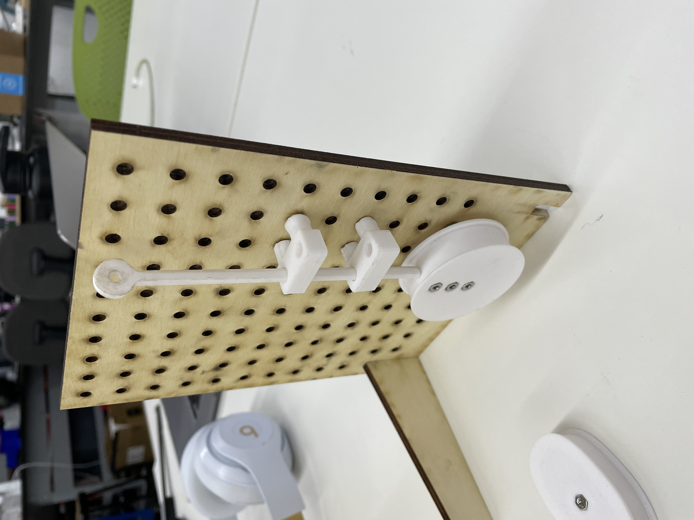
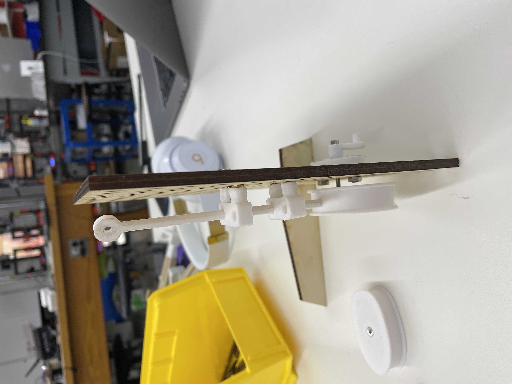
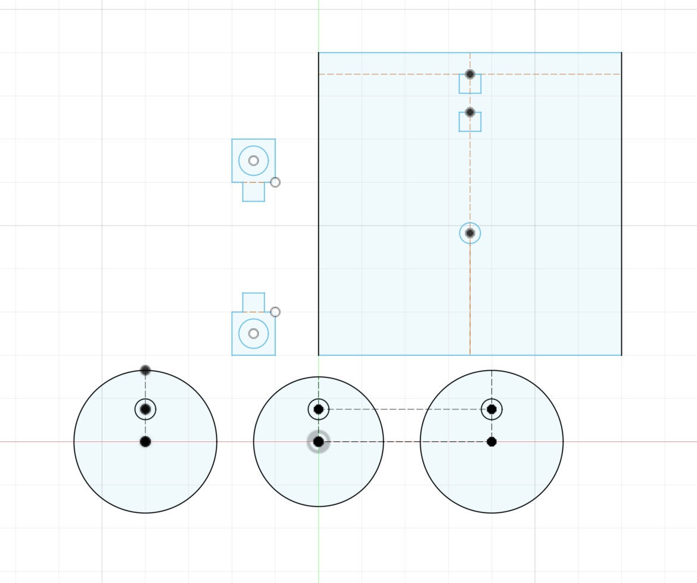
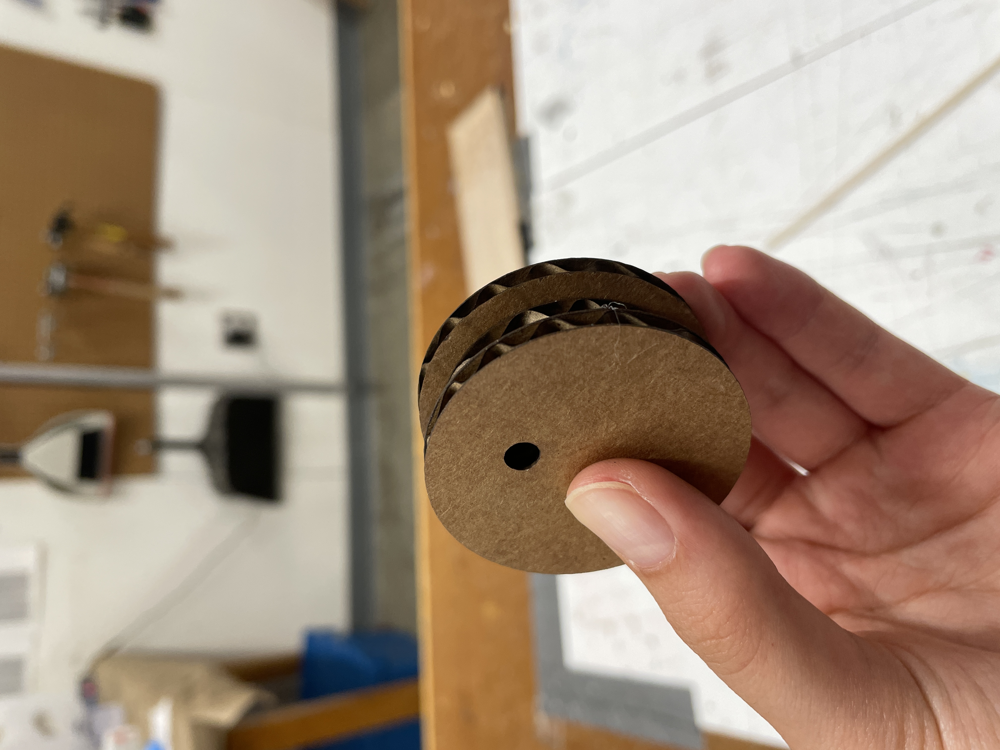
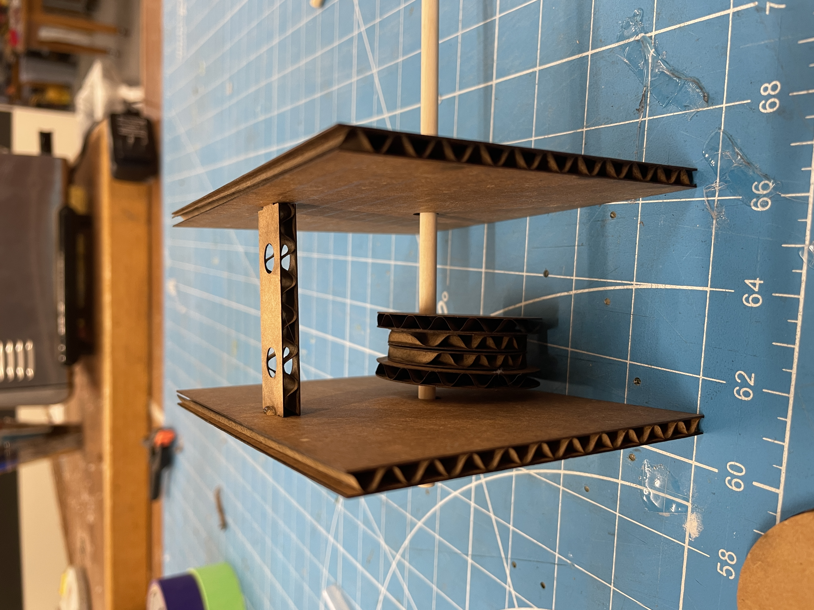

My most recent obsession has been cute doodles of peanut butter toast and jelly toast (like this one I found on pinterest), so I decided that I wanted to make a little toaster with pieces of toast moving up and down for my kinetic sculpture. Looking at the examples of kinetic sculptures from lab, I thought that I could make my sculpture similar to the cardboard sculpture of the butterfly flapping its wings but replace the butterfly with the slices of toast. Based on this design, to make this project I would need to design the following parts on Fusion:
the outer box for the toaster
a camshaft component with two cams set in opposite directions
a slice of toast with faces (x2)
Making my toaster :D
At first, I thought I would start by making the outer toaster box in Fusion. However, this left me feeling a bit stuck since I couldn't really visualize what exactly would be going on inside of the outer toaster box, so I had no idea how large the box should be or if I needed a plain box shape vs a weird shape etc. Bobby helped me better orient myself by first creating a simple mechanism using an automata kit and focusing on the inner mechanism first before making the outer box design. I very quickly (well not really that quickly) made a very small and simplified Fusion sketch for a single cam and single wall just to better visualize how the pieces would all fit together with the cardboard and wooden dowels (and get more practice using parameters in Fusion) and print it with the laser cutter.

Test mechanism 1
I felt a lot less overwhelmed once I got my test 0 all printed/cut out and went straight into sketching a new test on Fusion with two cams and two walls, as well as a longer piece to hold the dowels that would be moving up and down (per Bobby's suggestion). I also designed two slices of toast with faces in inkspace kind-of inspired by some of the funny shaped slices of toast in the window of the Friendly Toast that I pass everyday on the way to class, and I googled how to import an inkscape svg into Fusion so that I could cut them out on the lasercutter. Instead of engraving the details on them, I decided to just score them so that it would be faster (plus I thought the deeper cuts might actually look better for this).
When putting the cams together (one smaller circle with two slightly larger circles around it), I realized that it would probably work a bit better to have two smaller circles in the center so that the track that the moving dowels follow would fit the diameter of the dowels better. I only had two smaller circles in my Fusion sketch, so I just made one cam for this test run and decided to print extra in my next test. I used hot glue to put the cam together and to attach the walls to the plank piece (also realized I made two plank pieces but only one hole so I could only use one of them...).

Test mechanism 2
For my second test, I still wanted to use the cam I made from test 1 (since I did not hot glue it to a dowel well and it came off) and I wanted to make the dimensions of the walls as small as possible to fit the cams but also add another rectangular slot so that I could insert two plank pieces instead of just one. So, for my test 2 Fusion sketch, I resized the walls, added the extra slots, made the planks slightly longer than before, and left the two smaller, inner circles for the second cam (and removed the outer ones because I already had some from test 1 that I didn't use). Again, I used hot glue to put everything together, and this time, I actually glued the cams to the wooden dowel (which I sawed in half using a knife and then covered the end with a dot of hot glue) but opposite to each other so that one would be pointing up while the other would be down. Everything fit pretty well together, but when I put a dowel through the top to see if it would move up and down, it would just slip off to the side of the cam and get stuck. Looking at the butterfly example from class, I saw that it would probably work better if I put a small piece perpendicular to the dowel so that it could slide across the cams better.
 My most recent obsession has been cute doodles of peanut butter toast and jelly toast (like this one I found on pinterest), so I decided that I wanted to make a little toaster with pieces of toast moving up and down for my kinetic sculpture. Looking at the examples of kinetic sculptures from lab, I thought that I could make my sculpture similar to the cardboard sculpture of the butterfly flapping its wings but replace the butterfly with the slices of toast. Based on this design, to make this project I would need to design the following parts on Fusion:
My most recent obsession has been cute doodles of peanut butter toast and jelly toast (like this one I found on pinterest), so I decided that I wanted to make a little toaster with pieces of toast moving up and down for my kinetic sculpture. Looking at the examples of kinetic sculptures from lab, I thought that I could make my sculpture similar to the cardboard sculpture of the butterfly flapping its wings but replace the butterfly with the slices of toast. Based on this design, to make this project I would need to design the following parts on Fusion:  When putting the cams together (one smaller circle with two slightly larger circles around it), I realized that it would probably work a bit better to have two smaller circles in the center so that the track that the moving dowels follow would fit the diameter of the dowels better. I only had two smaller circles in my Fusion sketch, so I just made one cam for this test run and decided to print extra in my next test. I used hot glue to put the cam together and to attach the walls to the plank piece (also realized I made two plank pieces but only one hole so I could only use one of them...).
When putting the cams together (one smaller circle with two slightly larger circles around it), I realized that it would probably work a bit better to have two smaller circles in the center so that the track that the moving dowels follow would fit the diameter of the dowels better. I only had two smaller circles in my Fusion sketch, so I just made one cam for this test run and decided to print extra in my next test. I used hot glue to put the cam together and to attach the walls to the plank piece (also realized I made two plank pieces but only one hole so I could only use one of them...).